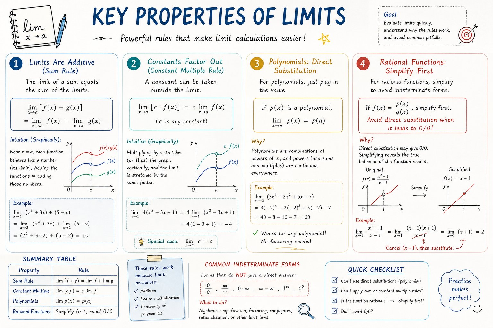

01 / 06 · 研究问题
从通量衰减到验证路径
通量下降，发生了什么？
逐页查看原尺寸 PNGLOCAL RESEARCH CONCEPTS · CONCEPT ONLY · 6 / 6
膜处理研究汇报。六页展示从研究问题、观察与证据边界，到示例数据、候选解释和下一步计划。
所有数据均为明确标注的教学示例，不是实验结果。膜与水流插画是通用概念图示，不是显微照片或实搭设备。S02无刻度曲线仅作观察示意；S03重复图标不表示真实重复数。唯一数值曲线在S04，且不是实验结果。概念图不是可编辑 PPTX，也不代表用户视觉接受。
全部六页 · 原尺寸浏览下载图库与完整项目证据 ZIP01 / 06 · 研究问题
通量下降，发生了什么？
逐页查看原尺寸 PNG
02 / 06 · 观察与证据
一条曲线，回答不了所有问题。
逐页查看原尺寸 PNG
03 / 06 · 方法计划
计划示意，尚未执行。
逐页查看原尺寸 PNG
04 / 06 · 示例数据
示例曲线不能推断显著性。
逐页查看原尺寸 PNG
05 / 06 · 待验证解释
通量下降本身不能确定原因。
逐页查看原尺寸 PNG
06 / 06 · 下一步实验
先设计对照与重复，再收集证据。
逐页查看原尺寸 PNG实际查看 case175.jpg。仅用于研究高级编辑式的不对称层级、留白与主次节奏，不作为科研事实或实验图证据。
原始来源 · 原始提示词
实际查看 case341.jpg。只借科学说明中结构关系与几何直觉清晰的原则，不把该图视为科研证据。
原始来源 · 原始提示词逐页提示词和实际生成记录也随 ZIP 与项目证据一起提供。